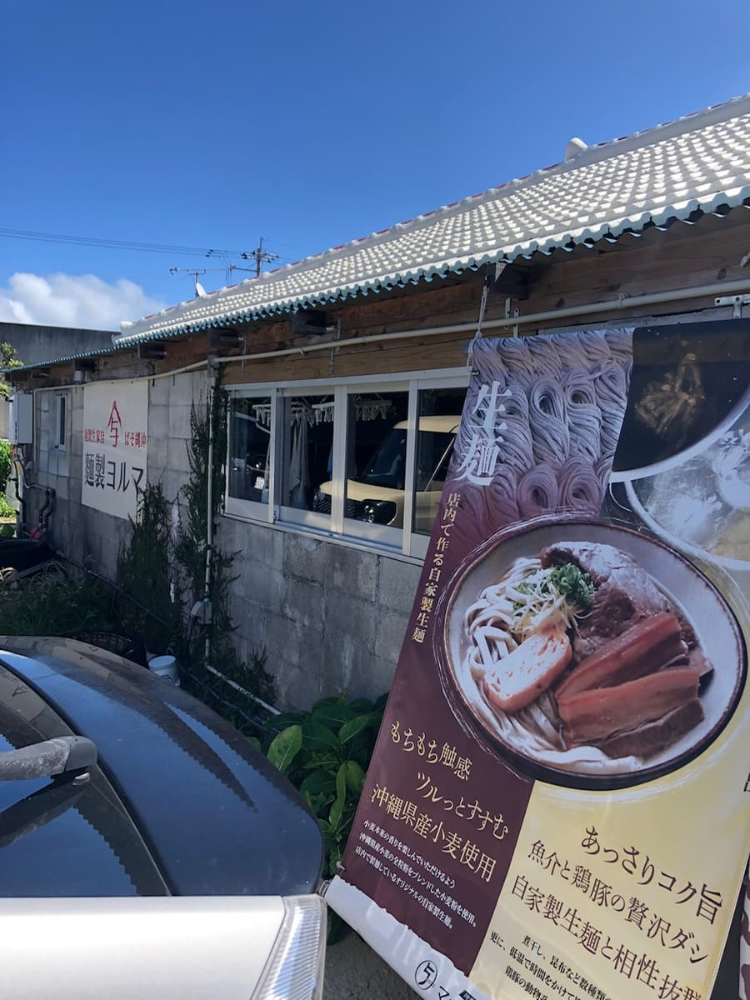
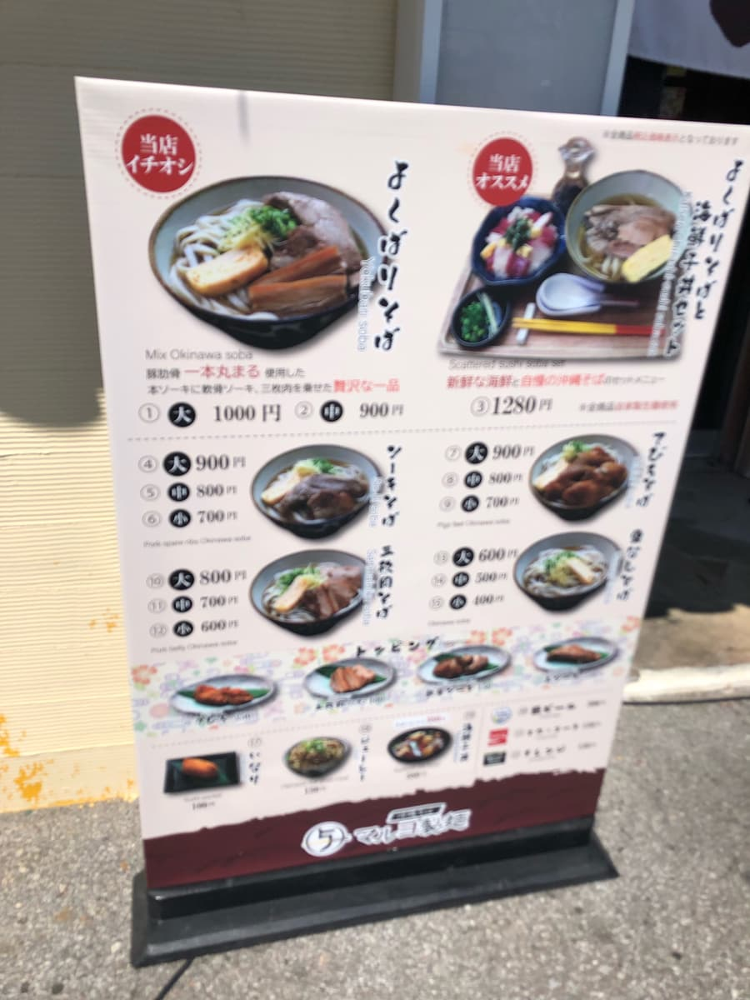
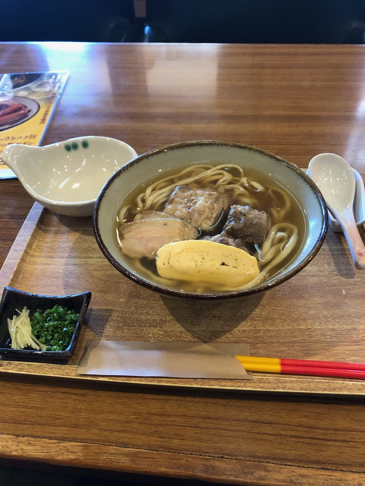
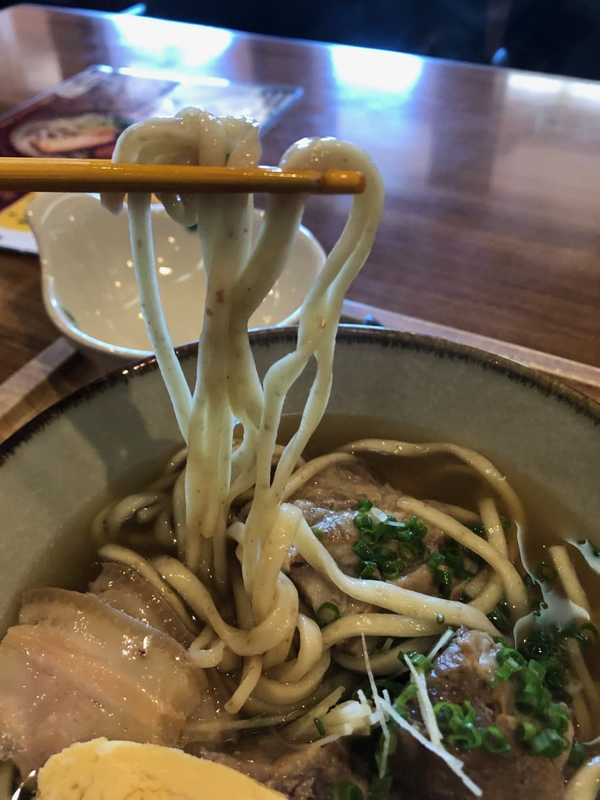

2023年9月吃的😁

这家店位在离县综（冲绳县综合运动公园）算近的地方，不过上网一查，好像各地都有分店(;^ω^) 这次一样没做任何功课，是偶然发现后就走进去了。

看店门口的菜单看板，「本店主打」介绍的是「贪心面」。
上面写着「使用整根猪肋骨的带骨排骨，再放上软骨排骨和三层肉的奢华一品」。于是决定点这道「本店主打・贪心面」😊
虽然是中午用餐时间，可能因为是平日，店内很空。从入口进去，入口附近有售票机（仅限现金），我买了推荐的「贪心面（中）」后向店员点餐。
桌上放着一份护贝的资料，说明这家店的卖点「生面」与「高汤」。
说明写着「生面：Q弹口感、滑溜顺口，使用冲绳县产小麦」、「高汤：清爽浓郁鲜美，海鲜与鸡猪的奢华高汤，与自家制生面绝配」。光看说明就觉得好好吃呢😋
不久后，「贪心面」来了。

先从汤头开始🤗 说明上写的是海鲜与鸡猪的综合高汤，因为「海鲜」排在最前面，我自作主张地想着柴鱼味应该比较强，喝了一口。
但是，味道好像跟想像的不太一样？为了确认又喝了一口。果然感觉不到柴鱼基底？反而比较像是鸡猪的基底。
虽然是好喝的汤头，不过我个人比较喜欢海鲜味重一点的感觉(;^ω^) 但还是很好喝。
接下来是生面。是中粗的直面，如同说明所写，口感Q弹、弹性恰到好处、滑溜顺口。是好吃的面呢😊
面条里好像有什么揉进去的东西，是冲绳县产小麦的什么部分吗？看得见揉在面里。

评分（9.5分/15分）：就是普通的好吃。我觉得尤其是生面水准很高。和在恩纳村吃过的「金月面」、前阵子在宜野湾市吃的「介面」感觉类似，都觉得水准很高。汤头也好喝，和面也很搭，不过我个人觉得海鲜系的味道如果再强一点会更好。配料虽然软，但味道偏清爽，我个人比较喜欢更入味一点的感觉。要不要试试看一次使用冲绳县产小麦的生面呢？
面：★★★✬☆（3.5）
汤头：★★★☆☆（3）
配料：★★★☆☆（3）